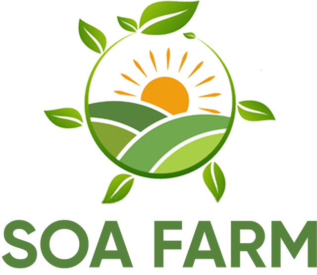

Pigs
Raised on our piggery in Osiele, Abeokuta. Sold by batch when ready.
SOA Farm raises pigs and grows farm produce in Osiele, Abeokuta, Ogun State. We sell in batches, and every sale is announced first in our Telegram group.
Join our Telegram group See what we sell
Dates, prices and quantities are posted in the Telegram group before each sale.
SOA Farm is a piggery and farm produce business in Osiele, Abeokuta, Ogun State, selling fresh, in batches, to our community.
To raise healthy pigs and grow fresh farm produce responsibly, and to supply families, traders and businesses with quality food at fair prices.
To become a trusted name in Nigerian agriculture, known for quality, honest dealing and farming that is good for people and the land.
We supply pork and fresh vegetables to help improve local access to nutritious food.
We create work on the farm and grow the local economy through trade in our products.
We sell in planned batches to reduce spoilage, and we work to put farm by-products to good use.
We aim to farm in a way that protects the soil and surrounding land.
Availability changes with each batch. Check the Telegram group for what is ready now.
Raised on our piggery in Osiele, Abeokuta. Sold by batch when ready.
Freshly harvested fluted pumpkin leaves.
Fresh leaves picked from our farm.
Ask in the group for current availability and price.
We sell at intervals, not every day. This keeps everything fresh and lets you plan ahead.
Open our Telegram group and turn on notifications.
We post the date, items, quantities and prices before each sale.
Message us in the group or directly to reserve your share.
Pick up at the farm on the sale day, or ask about delivery.
Sale dates, fresh stock and price updates go to Telegram first. Join, then order straight from the group.
Open Telegram groupPlease message us before visiting so we can confirm someone is on site.